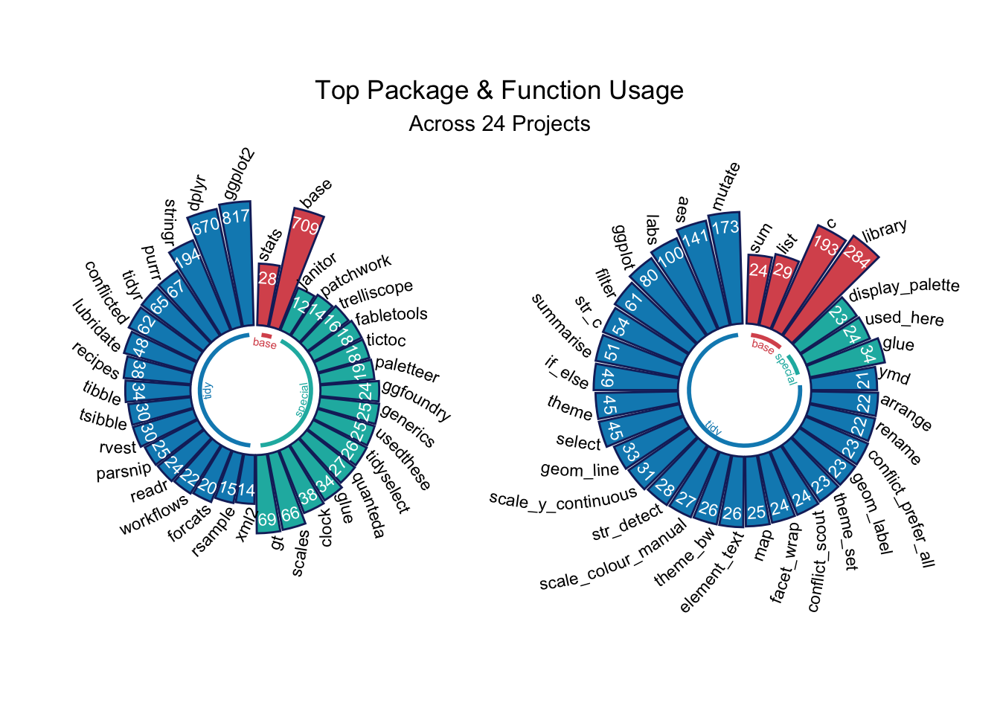

Favourite Things

Each project closes with a table summarising the R tools used. By aggregating the package and function usage across all projects, there’s an opportunity to:
Spot the use of superseded functions like
map_dfrCheck for usage consistency, e.g.
clock::date_todayversusSys.DateSee where it would be most useful to keep an eye on package version updates
Since starting this in 2017, functions like tidyr’s spread and gather have been superseded by pivot_wider and pivot_longer. Newer packages have emerged like tidyclust, which brings cluster modelling to tidymodels (now used in Finding Happiness in ‘The Smoke’). bslib has brought improvements to the latest shiny app version embedded in Plots Thicken. The paletteer package has put it’s arms around the myriad palette packages out there. And scales’ cut_short_scale assisted with plot labelling.
More recently, dplyr and purrr have presented a host of enhancements. For example, the .by argument in mutate and friends offers a concise temporary alternative to group_by and ungroup in many situations. Joins have been enhanced (e.g. to support inequality conditions) with the addition of join_by to dplyr. And changes in the map_ family introduce list_rbind and associates with map_dfr, for example, now superseded.
theme_set(theme_bw())
pal_name <- "LaCroixColoR::CranRaspberry"
pal <- paletteer_d(pal_name)
display_palette(pal, pal_name)
Separation of tidyverse and non-tidyverse packages may be achieved by using the likes of tidyverse_packages which lists all packages in the tidyverse.
tidy <-
c(
tidyverse::tidyverse_packages(),
fpp3::fpp3_packages(),
tidymodels::tidymodels_packages()
) |>
unique()used_here() has already been used in Quantum Jitter projects to generate a usage table at the foot of each project with the CSS class usedthese. used_there() may now be used to web-scrape all the tables with this class to aggregate package and function usage data.
base_packages <- c(
"stats",
"graphics",
"grDevices",
"utils",
"datasets",
"methods",
"base"
)
used_df <-
used_there("https://www.quantumjitter.com/project/") |>
mutate(multiverse = case_match(
Package,
tidy ~ "tidy",
base_packages ~ "base",
.default = "special"
))
n_url <- used_df |> summarise(n_distinct(url)) |> pull()
pack_df <- used_df |>
count(Package, multiverse, wt = n) |>
mutate(name = "package")
fun_df <- used_df |>
count(Function, multiverse, wt = n) |>
mutate(name = "function")
packfun_df <- pack_df |>
bind_rows(fun_df) |>
arrange(desc(n)) |>
mutate(
packfun = coalesce(Package, Function),
name = fct_rev(name),
.by = name
)My most commonly used packages and functions are revealed with the help of geomtextpath (Cameron and Brand 2024) and a pair of “Catherine wheel” plots.
prep_data <- \(x, y){
used_df |>
count({{ x }}, multiverse, wt = n) |>
filter(n > y) |>
arrange(multiverse, n) |>
mutate(row = row_number())
}
radial_df <- prep_data(Package, 10)
radial_df2 <- prep_data(Function, 20)
prep_lines <- \(data){
data |>
summarise(
start = min(row),
end = max(row),
.by = multiverse
)
}
lines_df <- prep_lines(radial_df)
lines_df2 <- prep_lines(radial_df2)
prep_plot <- \(data, data2, x){
data |>
mutate({{ x }} := fct_reorder({{ x }}, row)) |>
ggplot(aes({{ x }}, n, fill = multiverse, colour = multiverse)) +
geom_col(colour = pal[6]) +
geom_textpath(aes(label = n), colour = "white", vjust = -0.2, size = 3) +
geom_textpath(aes(label = {{ x }}),
size = 3, colour = "black",
text_only = TRUE, offset = unit(-10, "pt"), angle = -70, hjust = 1
) +
geom_textsegment(
aes(start, 0.6, xend = end, yend = 0.6, label = multiverse),
data = data2,
linewidth = 1,
size = 2, gap = FALSE,
offset = unit(-7, "pt")
) +
coord_radial(inner.radius = 0.25) +
scale_y_log10() +
scale_fill_manual(values = pal[c(1, 4, 5)]) +
scale_colour_manual(values = pal[c(1, 4, 5)]) +
theme_void() +
theme(
axis.text.x = element_blank(),
legend.position = "none"
)
}
p1 <- prep_plot(radial_df, lines_df, Package)
p2 <- prep_plot(radial_df2, lines_df2, Function)
p1 + p2 + plot_annotation(
title = "Top Package & Function Usage",
subtitle = glue("Across {n_url} Projects"),
theme = theme(
plot.title = element_text(hjust = 0.5),
plot.subtitle = element_text(hjust = 0.5)
)
)
This last code chunk generates the word cloud for use as the feature image for this project.
set.seed = 123
packfun_df |>
mutate(angle = 45 * sample(-2:2, n(),
replace = TRUE,
prob = c(1, 1, 4, 1, 1))) |>
ggplot(aes(
label = packfun,
size = n,
colour = multiverse,
angle = angle
)) +
geom_text_wordcloud(
eccentricity = 1,
grid_margin = 0.95,
seed = 789
) +
scale_size_area(max_size = 20) +
scale_colour_manual(values = pal[c(1, 6, 5)]) +
theme_void() +
theme(plot.background = element_rect(fill = "white"))
R Toolbox
This project’s code too should be included in my “favourite things”.
| Package | Function |
|---|---|
| base | c[6], library[13], max[1], min[1], sample[1], unique[1] |
| conflicted | conflict_prefer_all[1], conflict_scout[1] |
| dplyr | arrange[2], bind_rows[1], case_match[1], coalesce[1], count[3], desc[1], filter[1], mutate[7], n[1], n_distinct[1], pull[1], row_number[1], summarise[2] |
| forcats | fct_reorder[1], fct_rev[1] |
| geomtextpath | geom_textpath[2], geom_textsegment[1] |
| ggfoundry | display_palette[1] |
| ggplot2 | aes[5], coord_radial[1], element_blank[1], element_rect[1], element_text[2], geom_col[1], ggplot[2], scale_colour_manual[2], scale_fill_manual[1], scale_size_area[1], scale_y_log10[1], theme[3], theme_bw[1], theme_set[1], theme_void[2] |
| ggwordcloud | geom_text_wordcloud[1] |
| glue | glue[1] |
| grid | unit[2] |
| paletteer | paletteer_d[1] |
| patchwork | plot_annotation[1] |
| tidymodels | tidymodels_packages[1] |
| tidyverse | tidyverse_packages[1] |
| usedthese | used_here[1], used_there[1] |